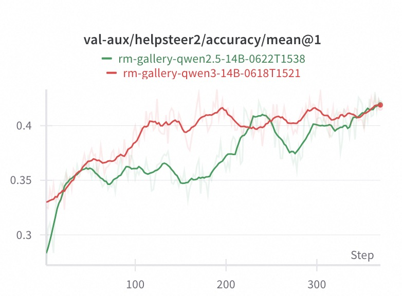
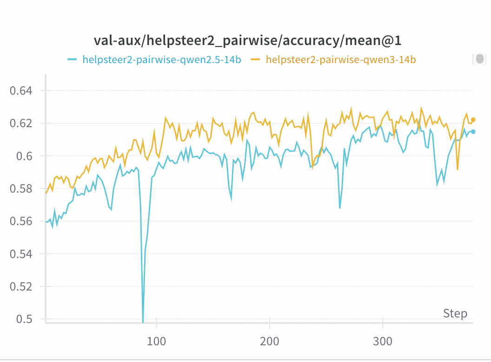
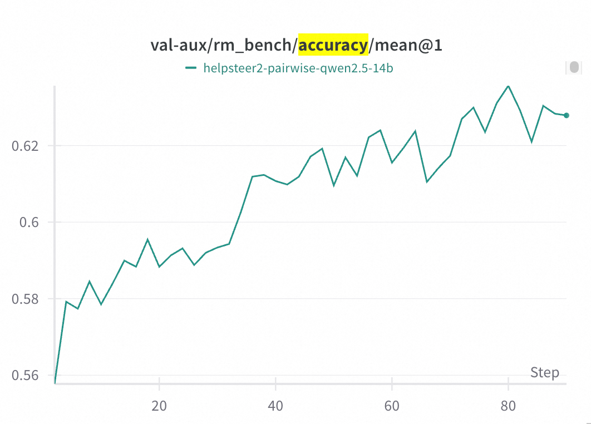

VERL-based Reward Model Training Complete Guide
1. Overview
This document provides a comprehensive guide for training reward models using the VERL framework. Through this tutorial, you will learn how to configure the environment, prepare data, design reward functions, and execute the training pipeline.
This guide covers two main training approaches: - Pointwise Training: Absolute scoring based on individual responses (0-4 scale) - Pairwise Training: Relative preference judgments based on response comparisons
We will use the HelpSteer2 dataset as concrete examples, providing end-to-end implementation demonstrations.
2. System Architecture
The VERL reward model training system consists of three core components:
2.1. Training Dataset - Inherits from BaseTrainDataset
- Supports 0-4 scale helpfulness scoring (Pointwise)
- Supports preference comparison evaluation (Pairwise)
- Provides flexible conversation template system
- Integrates custom reward functions
2.2. Prompt Template - Based on BasePromptTemplate
- Defines structured output format for scoring
- Supports extensible scoring criteria
- Adapts to different evaluation tasks
2.3. Reward Function - Customizable reward computation module
- Supports exponential decay reward calculation
- Provides flexible evaluation metric configuration
- Real-time accuracy and MAE statistics
3. Environment Configuration
3.1. System Requirements
| Component | Recommended Version |
|---|---|
| Python | ≥ 3.10 |
| CUDA | ≥ 12.1 |
| PyTorch | ≥ 2.1 |
| Ray | ≥ 2.9 |
| VERL | ≥ 0.4.0 |
| VLLM | ≥ 0.8.4 |
3.2. Runtime Configuration
Create a runtime_env.yaml configuration file:
# runtime_env.yaml
excludes: ["/.git/"]
env_vars:
TORCH_NCCL_AVOID_RECORD_STREAMS: "1"
PYTORCH_CUDA_ALLOC_CONF: "expandable_segments: False"
WANDB_API_KEY: "your_wandb_api_key"
WANDB_BASE_URL: "your_wandb_base_url"
HYDRA_FULL_ERROR: "1"
3.3. Dependency Installation
Ensure the following core dependencies are installed:
- verl==0.4.0 (core framework)
- ray>=2.9 (distributed computing)
- vllm>=0.8.4 (inference engine)
- torch>=2.1 (deep learning framework)
4. Quick Start
4.1. Prepare Training Data
Training data should conform to the DataSample format specification. For detailed data loading and preprocessing steps, please refer to the data loading section.
4.2. Launch Ray Distributed Cluster
4.2.1. Single Node Setup
Example for a single node with 8 × A100:
ray start --head --node-ip-address $MASTER_ADDR --num-gpus 8 --dashboard-host 0.0.0.0
4.2.2. Multi-Node Setup
Master Node:
ray start --head --node-ip-address $MASTER_ADDR --num-gpus 8
Worker Nodes:
ray start --address=$MASTER_ADDR:6379 --num-gpus 8
4.3. Choose Training Mode
Select the appropriate training mode based on your needs:
4.3.1. Pointwise Training (Absolute Scoring)
cd examples/train/pointwise
chmod +x run_pointwise.sh
./run_pointwise.sh
4.3.2. Pairwise Training (Preference Comparison)
cd examples/train/pairwise
chmod +x run_pairwise.sh
./run_pairwise.sh
5. Pointwise Training Detailed Guide
Pointwise training is suitable for absolute scoring scenarios, such as HelpSteer2's 0-4 scale helpfulness scoring.
5.1. Data Download
HelpSteer2 dataset: https://huggingface.co/datasets/nvidia/helpsteer2
# Create data directory
mkdir -p ~/data/HelpSteer2 && cd ~/data/HelpSteer2
# Download dataset
git clone https://huggingface.co/datasets/nvidia/helpsteer2
5.2. Data Conversion
5.2.1. Prepare YAML Configuration
examples/train/pointwise/data_config.yaml:
dataset:
name: helpsteer2_pointwise
configs:
type: local
source: helpsteer2_pointwise
path: ~/data/HelpSteer2/helpsteer2
export:
output_dir: ./examples/data/exports
formats: ["parquet"]
preserve_structure: true
split_ratio: {train: 0.8, test: 0.2}
5.2.2. Execute Conversion
python examples/data/data_from_yaml.py \
--config examples/train/pointwise/data_config.yaml
5.3. Training Script Configuration
Check key configurations in examples/train/pointwise/run_pointwise.sh:
TRAIN_FILE=./examples/data/exports/helpsteer2_pointwise_train.parquet
VAL_FILE=./examples/data/exports/helpsteer2_pointwise_test.parquet
MODEL_PATH=/path/to/your/base/model # e.g., Qwen3-8B
5.4. Pointwise Core Components
5.4.1. Data Converter
- File:
rm_gallery/gallery/data/load/helpsteer2_pointwise.py - Class:
HelpSteer2PointwiseConverter - Function: Convert raw HelpSteer2 data to
DataSamplewith helpfulness scores
5.4.2. Prompt Template
class PointwiseTrainTemplate(BasePromptTemplate):
score: int = Field(default=..., description="helpfulness score from 0 to 4")
5.4.3. Reward Function
def pointwise_reward(predicted_score, true_score):
"""Reward function optimized for HelpSteer2's 0-4 scale"""
if true_score is None:
return 0.0
abs_error = abs(predicted_score - true_score)
max_error = 4 # HelpSteer2 scale: 0-4
k = 2.0 # Decay coefficient
error_ratio = abs_error / max_error
reward = math.exp(-k * error_ratio)
return float(reward)
5.5. Training Results & Evaluation
5.5.1. Model Performance Comparison
We conducted pairwise training experiments using two different base models on the HelpSteer2 pointwise dataset:
- Qwen2.5-14B: Traditional language model
- Qwen3-14B: Reasoning-enhanced model
5.5.2. Validation Accuracy Results

The training curves show validation accuracy on the test dataset over 350 training steps:
Key Observations:
- Qwen3-14B Performance (Red line):
- Rapid convergence in early training, reaching high accuracy within ~50 steps
- Achieves peak performance around step 200 (~0.42 accuracy)
- Stable training process with minimal fluctuations
-
Final accuracy stabilizes around 0.42
-
Qwen2.5-14B Performance (Green line):
- Lower starting accuracy (~0.28)
- Notable fluctuations and drops during training
- Performance decline in the 200-250 step range
-
Recovery in later stages (after step 300), approaching Qwen3-14B levels
-
Comparative Analysis:
- Convergence Speed: Qwen3-14B converges faster with higher training efficiency
- Stability: Qwen3-14B shows smoother training curve, while Qwen2.5-14B exhibits larger fluctuations
- Final Performance: Both models achieve similar final accuracy (~0.42)
- Training Characteristics: Qwen3-14B demonstrates superior training stability and predictability
6. Pairwise Training Detailed Guide
Pairwise training is suitable for preference comparison scenarios, judging which of two responses is better.
6.1. Data Download
HelpSteer2 preference dataset: https://huggingface.co/datasets/nvidia/HelpSteer2/tree/main/preference
# Create data directory
mkdir -p ~/data/HelpSteer2 && cd ~/data/HelpSteer2
# Download preference data
wget -c https://huggingface.co/datasets/nvidia/HelpSteer2/resolve/main/preference/preference.jsonl.gz
# Extract (keep original file)
gunzip -k preference.jsonl.gz
6.2. Data Conversion
6.2.1. Prepare YAML Configuration
examples/train/pairwise/data_config.yaml:
dataset:
name: helpsteer2_pairwise
configs:
type: local
source: helpsteer2_pairwise
path: ~/data/HelpSteer2/preference/preference.jsonl
export:
output_dir: ./examples/data/exports
formats: ["parquet"]
preserve_structure: true
split_ratio: {train: 0.8, test: 0.2}
6.2.2. Execute Conversion
python examples/data/data_from_yaml.py \
--config examples/train/pairwise/data_config.yaml
6.3. Training Script Configuration
Check key configurations in examples/train/pairwise/run_pairwise.sh:
TRAIN_FILE=./examples/data/exports/helpsteer2_pairwise_train.parquet
VAL_FILE=./examples/data/exports/helpsteer2_pairwise_test.parquet
MODEL_PATH=/path/to/your/base/model
6.4. Pairwise Core Components
6.4.1. Data Converter
- File:
rm_gallery/gallery/data/load/helpsteer2_pairwise.py - Class:
HelpSteer2PairwiseConverter - Function: Convert raw JSONL to
DataSampleand create both forward & reverse preference pairs
Conversion Logic:
1. Read prompt, response_1, response_2, preference_strength
2. Determine preference (>0 → response_2 is better, <0 → response_1 is better, 0 → tie)
3. Generate two samples (forward + reverse order)
6.4.2. Prompt Template
class PairwiseComparisonTemplate(BasePromptTemplate):
think: str # (optional) chain-of-thought
preference: str # A / B / tie
# Example output format:
# <think>...</think>
# <preference>A</preference>
6.4.3. Reward Function
- File:
examples/train/pairwise/reward_fn.py - Core Function:
compute_score()
Processing Flow:
1. Parse model output with extract_preference_from_response(solution_str)
2. Compare with metadata.preferred to produce reward: 1.0 (correct) / 0.0 (wrong)
6.5. Training Results & Evaluation
6.5.1. Model Performance Comparison
We conducted pairwise training experiments using two different base models on the HelpSteer2 preference dataset:
- Qwen2.5-14B: Traditional language model
- Qwen3-14B: Reasoning-enhanced model
6.5.2. Validation Accuracy Results

The training curves show validation accuracy on the test dataset over 350 training steps:
Key Observations:
- Qwen3-14B Performance (Orange line):
- Achieves higher overall accuracy (~0.62)
- More stable training progression
- Better convergence characteristics
-
Consistent performance throughout training
-
Qwen2.5-14B Performance (Blue line):
- Slightly lower accuracy (~0.61)
- More volatile training curve with occasional drops
- Shows improvement in later training stages
-
Reasonable final performance despite fluctuations
-
Comparative Analysis:
- Accuracy Gap: ~1% difference favoring Qwen3-14B
- Stability: Qwen3-14B demonstrates superior training stability
- Convergence: Both models show good learning progression
- Final Performance: Both achieve >60% accuracy on preference prediction
6.5.3. Cross-Dataset Evaluation: RM-Bench Results
To further validate the robustness of our trained models, we evaluated the same Qwen2.5-14B model (trained on HelpSteer2 pairwise data) on the RM-Bench dataset:

RM-Bench Evaluation Results:
- Dataset: RM-Bench (different from training data)
- Model: Qwen2.5-14B trained on HelpSteer2 pairwise data
- Performance: Achieves ~62.5% accuracy on RM-Bench
- Training Progression: Consistent improvement from ~55.8% (baseline Qwen2.5-14B model capability at step 0) to 62.5% over 80+ steps
Key Insights:
- Cross-Dataset Generalization: The model trained on HelpSteer2 generalizes well to RM-Bench
- Performance Consistency: Similar accuracy levels across different evaluation datasets
- Robust Learning: Steady improvement curve indicates stable learning dynamics
- Practical Validation: Strong performance on an independent benchmark confirms model quality
Practical Implications
- Model Selection: Qwen3-14B recommended for production use due to better stability and performance
- Training Duration: Both models benefit from extended training (300+ steps)
- Performance Threshold: Both models exceed the 60% accuracy threshold for practical deployment
- Cross-Dataset Robustness: Models demonstrate good generalization across different preference datasets
- Resource Efficiency: The marginal improvement of Qwen3-14B may justify the additional computational cost
7. Core Component Details
7.1. Custom Training Dataset
Complete implementation example of a custom training dataset:
class CustomTrainDataset(BaseTrainDataset):
def __init__(self, *args, **kwargs):
# Initialize reward module
self.reward_module = YourRewardModule(
name="custom_reward",
template=YourTemplate,
examples=self._get_examples(),
llm=None,
)
super().__init__(*args, **kwargs)
def _build_messages(self, example):
# Build formatted messages
result = self.reward_module.format(sample=example)
return [{"role": "user", "content": result}]
Important Note: Reasoning Model Configuration
When training reasoning reward models, pay attention to the following configuration: - For reasoning models (e.g., Qwen3): -
apply_chat_templatewithenable_thinking=True-formatwithenable_thinking=False- For non-reasoning models: -apply_chat_templatewithenable_thinking=False-formatwithenable_thinking=True
7.2. PPO + GRPO Pipeline
- Data Loading: Ray workers read the dataset and build prompts + ground truth scores
- Generation: Actor uses VLLM to generate score predictions in batches
- Reward Calculation: RewardManager calls the custom reward_fn to get scalar rewards
- Advantage Estimation: GRPO Estimator computes advantages & targets
- Policy Update: PPO updates the actor parameters, while the critic learns the value function
8. Training Monitoring
8.1. Logging and Metrics
The training process logs to both Console and Weights & Biases:
- Console: Use
ray job logs <job_id> -ffor real-time logs - WandB: Set
WANDB_API_KEYandWANDB_BASE_URLenvironment variables to upload metrics automatically
8.2. Key Monitoring Metrics
| Metric | Meaning | Target Range |
|---|---|---|
reward/mean |
Mean reward of the current epoch | 0.6 - 1.0 |
accuracy |
Accuracy of score predictions | > 0.7 |
kl_loss |
KL divergence to the reference model | < 0.1 |
8.3. Training Curves
Monitor the training progress through these key curves:
- Training Reward Curve: Shows model learning progression on training data
- Validation Reward Curve: Indicates generalization performance
- Loss Curves: Track convergence of different loss components
9. FAQ & Troubleshooting
9.1. Common Issues and Solutions
9.1.1. num_samples=0 error
Problem: The dataset is empty after filtering.
Solution: Check whether _build_messages parses rows correctly:
python
from examples.train.pointwise.dataset import PointwiseTrainDataset
ds = PointwiseTrainDataset(...)
print(len(ds))
9.1.2. Ray connection issues
Problem: Ray can't connect to 127.0.0.1:8265
Solution:
- Ensure ray start --head has been run
- Check that port 8265 is reachable
- Update --address parameter in the training script
9.1.3. Out of Memory Errors
Problem: CUDA out of memory during training
Solutions:
- Lower actor_rollout_ref.rollout.gpu_memory_utilization
- Reduce data.train_batch_size or ppo_micro_batch_size_per_gpu
- Use gradient checkpointing if available
9.1.4. Reasoning Model Configuration Issues
Problem: Incorrect thinking/reasoning token handling
Solution: For reasoning models (e.g., Qwen3):
- apply_chat_template with enable_thinking=True
- format with enable_thinking=False
For non-reasoning models:
- apply_chat_template with enable_thinking=False
- format with enable_thinking=True
9.1.5. HelpSteer2 Specific Issues
Data Format Validation:
python
import pandas as pd
df = pd.read_parquet('helpsteer2_train.parquet')
print(df.columns)
print(df['helpfulness'].value_counts()) # For pointwise
Score Range Configuration: HelpSteer2 uses 0-4 helpfulness scale, ensure max_error = 4 is set correctly in reward_fn.py.
9.2. Performance Optimization Tips
- Batch Size Tuning: Start with smaller batch sizes and gradually increase
- Memory Management: Monitor GPU memory usage with
nvidia-smi - Ray Resource Allocation: Ensure proper CPU/GPU resource allocation across Ray workers
- Data Loading: Use efficient data formats (Parquet) and appropriate chunk sizes
10. Inference & Evaluation
After training, look for LoRA or full weights in checkpoints/<TIMESTAMP>/actor_latest.
For evaluation examples, check
external/verl/tests/e2eor just load the weights for inference.
11. Related Resources
11.1. Tutorial Documentation
- Data Processing Tutorial - Comprehensive data handling techniques
11.2. Framework Documentation
- VERL Framework: Core training framework
- Ray Distributed: Distributed computing platform
- VLLM Inference: High-performance inference engine
11.3. Dataset Resources
- HelpSteer2: Human preference dataset
12. Conclusion
This guide provides a complete workflow for training reward models using the VERL framework, including:
- System Architecture Understanding: Core components and working principles
- Environment Configuration: Dependency installation and runtime setup
- Data Preparation: Download, conversion, and formatting
- Two Training Modes: Detailed implementation of Pointwise and Pairwise approaches
- Monitoring and Debugging: Key metrics and troubleshooting
- Best Practices: Performance optimization and configuration recommendations
By following this guide, you can successfully train reward models tailored to your specific needs, whether for absolute scoring or preference comparison tasks.